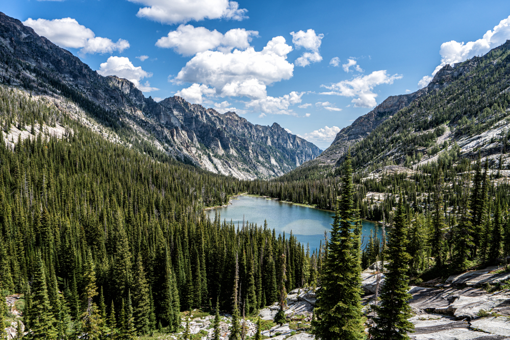

Adventurer's Guide to National Forests
National Forests are one of my favorite places to hike and explore. They are a special national treasure and provide experiences that can't be found anywhere else.

YouTube - Types of Public Lands
The Forest Service was founded in 1905. Its creation was a response to concerns about deforestation and its mission was to manage federal forest reserves for the "greatest good for the greatest number in the long run".
The United States has 154 National Forests. They exist for conservation and public use. They have no entry fees or camping fees except for select byways and parking areas. Here are some of the best features of National Forests:
- Dispersed Camping
- Camping is FREE as long as you follow leave no trace principles
- This is a great hack to stay for free near National Parks
- Hiking Trails
- National Forest trails are generally less popular, giving you more time to yourself
- Many trails lead deep into wilderness areas, allowing you to experience untouched nature
It's important to know the weather before you go into a national forest. Here's a weather dashboard so you know what to expect!
Tableau - National Forest Weather Data

Here are some of my FAVORITE National Forest hikes:
- Idaho
- Shafer Butte (Boise NF)
- Louie Lake (Payette NF)
- Utah
- Mount Timpanogos (Uinta-Wasatch-Cache NF)
- Big Springs (Uinta-Wasatch-Cache NF)
For more information on National Forests, check out these websites: